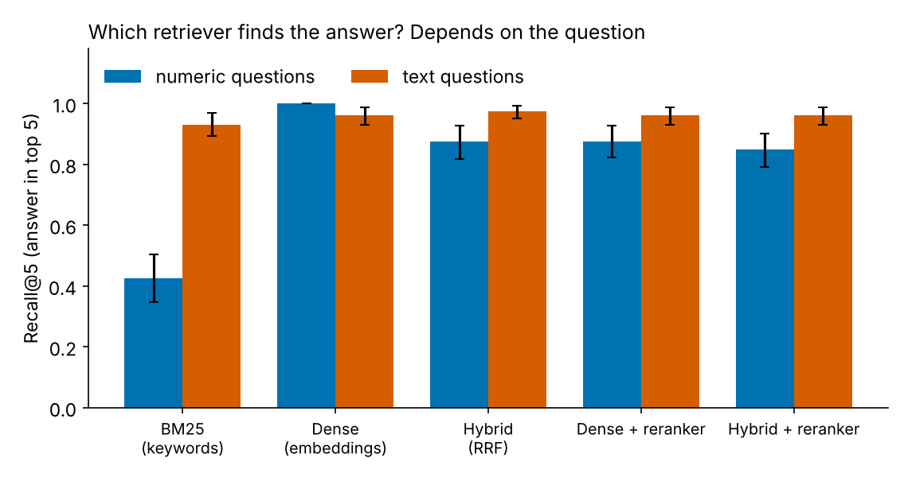
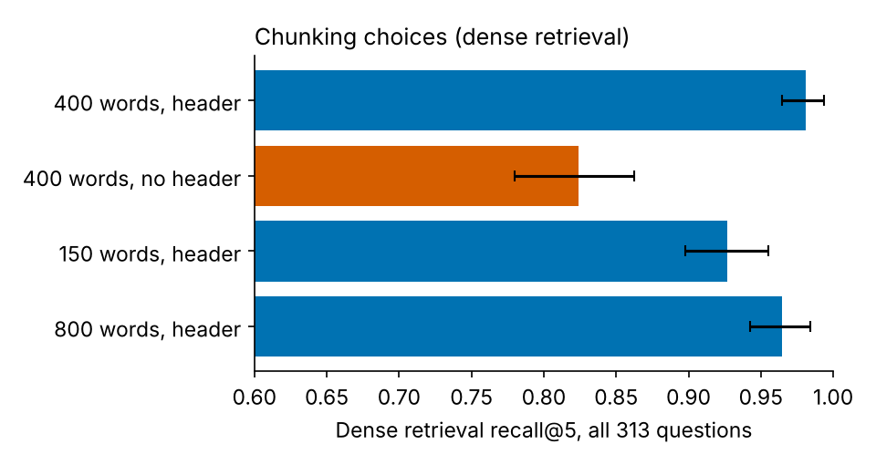
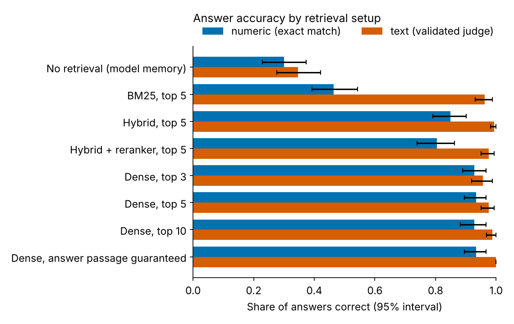

Can you trust an AI assistant's answers about a company's annual report, and how would you know?
I built a question-answering system over ten companies' latest 10-K filings, but most of the work is the evaluation harness: 343 questions with checkable answers, retrieval and answer quality measured separately, and an LLM judge that is itself tested before its scores are used.
TL;DR. With good retrieval, a small, cheap model (Claude Haiku 5.5) answers questions about these filings very accurately and almost never invents an answer. The decisive choices were in retrieval, not generation: embedding search beat keyword search by 30 points, labelling each chunk with its company added 16, and the popular "hybrid + reranker" recipe was worse than plain embedding search here. Most remaining "errors" are not hallucinations but definitions: net income with or without minority interests, cash with or without restricted cash. A real deployment would need the question to say which one it means.
The business question
Analysts, auditors and investors spend hours finding facts in 100-to-300-page annual reports. An AI assistant that answers from the filing could save that time, but only if you know how often it is right, and whether it says "I don't know" instead of making something up. So the question is not "can I build a chatbot" but how accurate is it, which design choices matter, and where does it fail?
The data
The latest annual report (10-K) of ten large companies across sectors: Apple, Microsoft, JPMorgan Chase, Walmart, Pfizer, ExxonMobil, Tesla, Costco, Nike and Delta. They were downloaded from SEC EDGAR by a GitHub Actions job, together with the SEC's machine-readable XBRL facts for the same filings. 5 of the ten are fiscal-2026 reports; without retrieval the model got 0 of 44 of their figures right, so for those it has to use the documents. The parser turns each filing's HTML into paragraphs and tables, tags each with its Item section (Risk Factors, MD&A, and so on), and splits them into about 4,600 chunks of roughly 400 words.
Evaluation design
The design keeps two questions apart: did retrieval find the right passage? and given the passages, did the model answer correctly and faithfully?
- 153 numeric questions ("What was Costco's net income for the fiscal year ended August 30, 2026?"), with answers taken from the SEC's XBRL facts for that exact filing, for the current and prior year. Graded by exact match within rounding, with no LLM involved.
- 160 text questions written by Claude Sonnet 5.5 from randomly sampled passages, each with a quote from the filing that contains the answer. Any question whose quote was not found word for word in the passage was discarded (none were).
- 30 unanswerable questions about years the filing does not cover (five years earlier, or the next fiscal year). The right behaviour is to say NOT_FOUND.
- Retrieval hit: a chunk counts if it is from the right company and contains the answer (the number, or the verbatim quote). Metrics: recall@5 and MRR, with bootstrap intervals over questions and paired comparisons on the same questions.
Retrieval: what finds the answer?
| Retriever (400-word chunks, header) | Recall@5, all | Numeric | Text | MRR, all |
|---|---|---|---|---|
| BM25 (keywords) | 68% (63%–73%) | 42% | 93% | 0.56 |
| Dense (embeddings) | 98% (96%–99%) | 100% | 96% | 0.87 |
| Hybrid (RRF) | 93% (90%–96%) | 88% | 98% | 0.81 |
| Dense + reranker | 92% (89%–95%) | 88% | 96% | 0.74 |
| Hybrid + reranker | 91% (87%–94%) | 85% | 96% | 0.73 |
| Hybrid, company known in advance | 95% (92%–97%) | 90% | 99% | 0.81 |

- Embedding (dense) search beats keyword search (BM25) by +29.7 points (95% CI +24.3 to +35.1). The gap is almost entirely on numeric questions: BM25 matches generic words such as "net income" and "fiscal year" in hundreds of chunks.
- Hybrid search was worse than dense alone, by +5.4 points (95% CI +2.2 to +8.6). Merging rankings let BM25's wrong chunks displace correct ones on numeric questions. On text questions hybrid was slightly ahead (+1.2 points (95% CI -1.9 to +5.0)), which is within noise.
- The off-the-shelf reranker hurt: +6.1 points (95% CI +2.9 to +9.6) on recall, and +0.12 on MRR. It was trained on web search queries and cuts long chunks to 512 tokens.
- Knowing the company in advance (filtering to the right filing) helped hybrid only a little, so cross-company confusion was not the main problem once chunks carry a header.
Chunking choices

The biggest single lever was a one-line header on every chunk ("Costco 10-K, fiscal year ended August 30, 2026 | Item 7 MD&A"): +15.7 points (95% CI +11.5 to +20.1). Without it, a chunk of a financial table does not say whose table it is. 400-word chunks beat 150-word chunks (+5.4 points (95% CI +2.2 to +8.6)), partly because small chunks split 5% of answers across two pieces. 400 vs 800 words was within noise (+1.6 points (95% CI -0.6 to +3.8)).
Note: my first header wrote dates as 2026-08-30 while questions say "August 30, 2026". I suspected that handicapped BM25 and changed it, but BM25 recall barely moved (0.693 to 0.684), so date format was not the explanation.
Answers: correct, faithful, and honest about gaps
Claude Haiku 5.5 answered every question under eight setups, using only the excerpts given and citing them, or replying NOT_FOUND. I chose these setups after seeing the retrieval results, so they lean towards dense retrieval.
| Setup | Numeric correct | Text correct | Text supported by excerpts | Answerable but said NOT_FOUND | Unanswerable: abstained |
|---|---|---|---|---|---|
| No retrieval (model memory) | 30% (23%–37%) | 35% (28%–42%) | 55% | 57.5% | 20/30 |
| BM25, top 5 | 46% (39%–54%) | 96% (93%–99%) | 100% | 26.5% | 30/30 |
| Hybrid, top 5 | 85% (79%–90%) | 99% (98%–100%) | 100% | 4.2% | 30/30 |
| Hybrid + reranker, top 5 | 80% (74%–86%) | 98% (95%–99%) | 100% | 6.4% | 30/30 |
| Dense, top 3 | 93% (89%–97%) | 96% (92%–99%) | 99% | 1.6% | 30/30 |
| Dense, top 5 | 93% (90%–97%) | 98% (95%–99%) | 100% | 1.0% | 30/30 |
| Dense, top 10 | 93% (88%–97%) | 99% (97%–100%) | 100% | 0.3% | 30/30 |
| Dense, answer passage guaranteed | 93% (90%–97%) | 100% (100%–100%) | 99% | 0.0% | 30/30 |

- Retrieval quality drives answer quality. Numeric accuracy goes from 46% with BM25 to 93% with dense retrieval, using the same model and prompt.
- When retrieval fails, the model mostly says so. With BM25, 27% of answerable questions got NOT_FOUND rather than a guessed number.
- No retrieval means no reliable answers. From memory alone the model got 30% of numeric questions right, almost all for older years: 0/44 for fiscal-2026 figures it could not have seen.
- Abstention: with any retrieval, it declined all 30 unanswerable questions. Without retrieval it answered 10 of them, often with real figures from memory; they are unanswerable only from these filings.
- Guaranteeing the answer passage did not raise numeric accuracy (93.5%, same as dense top 5). The remaining numeric errors are not retrieval failures.
Can the LLM judge be trusted?
Text answers are graded by an LLM judge (Claude Haiku 5.5), so I tested the judge before using its scores:
- Against known truth: on 180 numeric answers where exact-match grading gives the truth, the judge agreed 95.6% of the time (Cohen's kappa 0.91). It never accepted a wrong answer. Where they disagreed (8% of exact-match-correct answers), the judge was stricter than my rounding rule: it rejected rounded figures ("$9.0 billion" for $9,037M) and two JPMorgan totals the model had estimated from a percentage, which the 0.5% tolerance accepts. That is leniency in my exact-match grader, not judge error.
- Against planted errors: I took correct answers and changed the number by 10–30%. The judge rejected 60/60.
- Against a stronger model: Claude Sonnet 5.5 re-graded 60 text answers and agreed on all 60.
A mistake I caught in my own harness. The first version of the planted-error test changed the first number in each answer, which was often a date ("September 26" to "September 29") and left the final answer untouched. The judge "rejected" only 19/59, which looked like a bad judge. After fixing the test to change the answer itself, it rejected 60/60. Testing the tester matters.
Limit: a "supported by excerpts" check against the numeric ground truth was uninformative, because nearly every answer was supported (kappa about 0 on a near-constant label).
What the remaining errors are
I read every miss of the best setup (dense, top 5):
- 8 of 10 numeric misses are definitional. The model chose net income including minority interests (Walmart, Tesla), equity including minority interests (Walmart), cash including restricted cash (Exxon) or a different revenue line (Exxon). In most of them the answer also stated the figure the SEC data uses. The question did not say which definition it meant, and in practice an analyst would specify.
- 2 were grader errors. The SEC's structured data rounds Exxon's R&D spending to $1.2B and $1.0B, while the filing's table and the model say $1,228M and $987M. Counting those as correct, numeric accuracy is 94.8%.
- All 4 text misses were retrieval misses. In 3 the model said NOT_FOUND. In 1 it answered with a related, broader figure and said the exact one was not in the excerpts.
- No miss was a fabricated number.
How it is built
- Pipeline: EDGAR download and XBRL facts → block-aware HTML parser (tables kept as rows, Item sections detected, including filers who put headings in one-row tables) → chunker (size, overlap and header as settings) → BM25 / Gemini embeddings / RRF / cross-encoder.
- Runs on GitHub Actions with API keys as repository secrets; the development sandbox could not reach the SEC.
- 36 unit tests, including hand-computed RRF, recall and MRR values, the parser on tricky HTML, verbatim-evidence checks, and the corruption probe.
- Cost: about $2.50 of Claude calls in total (question writing, 2,744 answers, about 1,600 judge calls), plus Gemini embeddings.
Limitations
- The questions are easier than real analyst questions. Each needs one passage, and numeric ones follow fixed templates that dense search suits well. Multi-year comparisons, calculations and multi-hop questions are not tested.
- Generated text questions come from passages the parser kept, so they cannot test text the parser lost (for example, content in images).
- Lenient retrieval hit for numbers: any chunk from the right company containing the figure counts, even a passing mention. Lenient answer grading: the 0.5% tolerance accepts rounded and estimated figures.
- Setups were chosen after seeing retrieval results on the same questions, and I compared many variants, so small differences should not be over-read.
- No human-labelled set. The judge was validated against programmatic truth, planted errors and a stronger model, not against people.
- One model per role, ten companies, one filing each.